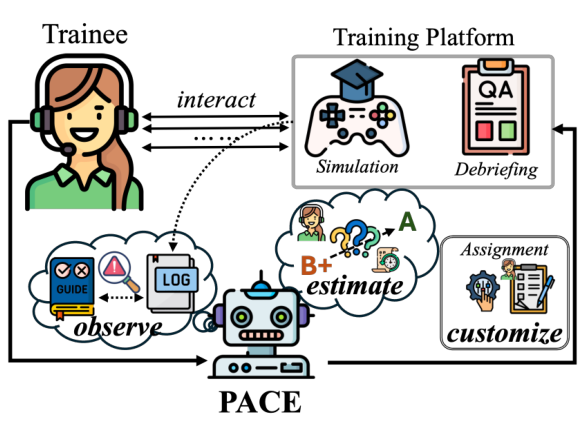
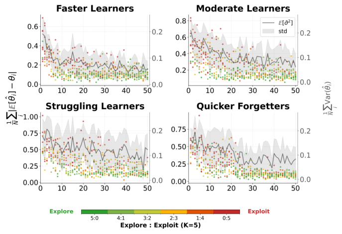

PACE: A Personalized Adaptive Curriculum Engine for 9-1-1 Call-taker Training (面向 9-1-1 接警员培训的个性化自适应课程引擎)
- 会议/期刊: IJCAI-ECAI 2026
- 作者与机构: Zirong Chen, Hongchao Zhang, Meiyi Ma（Vanderbilt University, College of Connected Computing）
- 推荐链路定位: 重排（每轮从 297 个候选场景中选 K=5 的批次，属列表级场景选择）
- 研究方向: 强化学习与动态探索推荐 / 图神经网络与知识图谱推荐
- 论文原文: https://arxiv.org/abs/2603.05361v2
- 开源代码: https://github.com/AICPS-Lab/PACE-911
TL;DR (1分钟核心速览)
9-1-1 接警员培训涉及 1053 个相互依赖的技能节点，人工教练为每名学员定制课程不可扩展（单次模拟-复盘循环 11.58 分钟，一个班每日需 83 小时复盘）。PACE 将课程设计形式化为技能图上的序贯决策：用 Beta 后验 + 图相似度传播做归纳式知识追踪，用幂律遗忘模型估计个体学习速率 \(\lambda\)与遗忘率\(\psi\)，再用 Thompson Sampling 上下文老虎机在"新技能获取 vs. 旧技能保持"间选场景。在 4 类 LLM 角色扮演学员、50 轮会话协议下，Z2H 较 Agent4Edu 缩短 19.50%，终局覆盖率与随机抽考分数分别提升 10.95% 与 5.58 分；与 923 条真实教练决策的对齐率达 95.45%，复盘周转时间从 11.58 分钟降至 34 秒。
Background & Motivation (背景与核心矛盾)
- 主流范式: 教育推荐沿用电商/IR 目标（CTR、会话时长）或扁平技能空间上的间隔重复与 Bandit 选课；知识追踪（BKT/DKT/图知识追踪）只做诊断，不做"诊断-处方"闭环。
- 前人局限: ① 参与度-学习目标错位——学员偏好"做得顺"的场景，但能力增长发生在最近发展区边缘，CTR 目标会系统性回避高价值难题；② 技能独立性假设失效——1053 个技能中直接观测每个节点在有限培训周期内不可行，且实测移除单个技能平均孤儿化 11.17% 下游检查点、导致 48.80% 完整通话评估失败；③ LLM 辅导 Agent 无法承载 6–8 周、200+ 次模拟的纵向历史（上下文溢出与 mid-context 检索退化），遗忘被静默累积。
- 核心洞察 (Key Insight): 技能依赖图既是诊断加速器（相似节点间可迁移证据，无需逐点观测），也是课程约束（前置未满足的场景不可选）；而"何时复习"必须用真实时钟时间的幂律遗忘而非会话计数来建模。
- 本文切入点: 把课程选择建模为以"信念质量 + 学员状态 + 进度"为上下文的上下文老虎机，奖励定义为施加真实时间衰减后的掌握度增量，使探索/利用自动随信念方差切换。
Method (核心方法设计)
1. 整体框架 (Overall Architecture)
PACE 作为课程层嵌入既有培训基础设施：LLM 从模拟通话转写中抽取结构化观测（合规/违规/部分合规/不适用 + 错误类型），Belief Tracker 将其转为每个技能节点的 Beta 后验并经相似度索引向未观测节点传播；Dynamics Estimator 从历史拟合个体学习速率 \(\lambda\)与遗忘率\(\psi\)；Contextual Bandit 以压缩上下文向量为输入，用 Thompson Sampling 逐条选出 K=5 的场景批次（每选一条即更新上下文以反映新覆盖技能）。前\(N_0=15\) 轮为冷启动静默观测期，之后进入自适应阶段。
flowchart TD
A["模拟通话转写 + 复盘评分"] --> B["LLM 观测抽取 (⊤/⊥/∼/⊘ + 错误类型)"]
B --> C["Beta 后验更新 + 图相似度证据传播"]
C --> D["动力学估计: 学习速率 λ / 幂律遗忘 ψ"]
D --> E["上下文向量 x_t"]
E --> F["Thompson Sampling 选 K=5 场景批次"]
F --> A
2. 关键设计拆解 (Key Designs)
-
图上的归纳式信念追踪（Inductive Belief Tracking）：痛点是要在 50 轮内覆盖 1053 个节点，逐点观测不可能。做法是先用句向量余弦相似度乘位置兼容项构造离线相似度索引 \(\phi(v_i,v_j)=\cos(\mathbf{s}_i,\mathbf{s}_j)\cdot\exp(-\epsilon|d_i-d_j|)\)（\(d_v\)为归一化协议深度，同阶段技能迁移性更强），观测到节点\(v\)后向相似节点传播\(\hat{\theta}_{v'}^{\text{new}}\leftarrow\text{mean}(\hat{\theta}_{v'}^{\text{curr}},\ \phi(v,v')\cdot\hat{\theta}_v)\)；Beta 后验用加权伪计数更新，且权重按错误类型调制（提示后成功\(w^+=0.5\)、概念性误解\(w^-=1.5\)、口误\(w^-=0.5\)）。直觉：把"猜对"与"掌握"区分开，并让一次观测在结构相关技能上产生折扣证据，从而指数级加速诊断覆盖。
-
个体学习/遗忘动力学（Power-Law Forgetting over Real Time）：痛点是把所有学员当同一遗忘率，导致高遗忘者被系统性欠复习。学习速率取历史平均边际增益 \(\lambda=\frac{1}{|\mathcal{H}|}\sum_{(v,t)\in\mathcal{H}}\Delta\theta_v^{(t)}\)；遗忘按真实时钟时间幂律衰减\(\theta_v^{(\tau+\Delta\tau_v)}=\theta_v^{(\tau)}\cdot(1+\kappa\cdot\Delta\tau_v)^{-\psi}\)，\(\psi\) 由"变间隔重测"的保持结果拟合。幂律而非指数衰减的物理直觉是：刚习得技能衰减快、巩固后趋缓，与认知科学实证一致；用真实时间而非会话数则是因为培训日程存在 24 小时以上的自然间隔。
-
上下文老虎机与奖励设计：上下文 \(x_t=[\bar{\sigma}^2, c \mid \hat{\lambda},\hat{\psi},\bar{w},d \mid t/N]\)分别编码模型质量、覆盖率、学员状态（弱技能均值\(\bar{w}\)、临近遗忘阈值技能数\(d\)）与进度；奖励为施加时间衰减后的掌握增量\(r_t=\sum_{v\in\mathcal{V}_{S_t}}(\hat{\theta}_v^{(t)}-\hat{\theta}_v^{(t-1)})\)。关键设计是把不确定性放进上下文而非奖励，使 Bandit 能学到"降低不确定性的探索动作会带来更高下游收益"。期望奖励线性建模\(E[r\mid x,S]=\mathbf{B}_S^\top x\)，高斯先验下用贝叶斯线性回归闭式更新，Thompson Sampling 采样选动作，无需负采样、无梯度训练。
Experimental Setup & Evaluation Protocol (实验设置与评估协议)
- 数据集与场景规模: 与纳什维尔 MNDEC 共建，技能图 \(|\mathcal{V}|=1053\)、\(|\mathcal{E}|=1283\)、覆盖 63 类事件；候选场景 297 个（经前置条件、操作有效性、复杂度三重过滤）；真实教练日志 923 条用于对齐评估。
| 数据/资源 | 规模 | 说明 |
|---|---|---|
| 技能图节点/边 | 1053 / 1283 | 条件节点 + 提问节点 + 指令节点，63 类事件 |
| 候选场景池 | 297 | 每轮选 \(K=5\)，共 50 轮 |
| 真实培训日志 | 923 条 | 含转写、复盘、教练下一轮指派 |
| 专家问卷 | 21 人 | 12 名教官 + 9 名在职接警员，5 点 Likert |
- 数据划分与防穿越: 无传统 train/test 划分；采用 LLM 角色扮演学员仿真（4 类 archetype × 10 个实例，参数 ±15% 扰动），真值 \((\Theta,\lambda,\psi)\) 对 PACE 完全隐藏，仅暴露对话观测；每 5 轮插入 24 小时真实间隔以触发遗忘。PACE 用 GPT-5，学员 Agent 用 Claude Sonnet 4.5 以规避同族偏差。
- 排名评测协议: 非检索式排序，而是课程级指标：Coverage@t（\(\theta_v\ge 0.85\) 的节点占比）、Z2H（首次达到场景级胜任的轮数，越低越好）、Random Exam（跨事件类型均匀抽题的留出考试分 0–100）。
- 对比基线与超参: Round-Robin、Deficit-Driven 两个启发式；GraphRAG、GenMentor、Agent4Edu 三个 LLM/Agent 基线（均在同一 9-1-1 数据上重实现）；消融为
w/o propagation与w/o dynamics（后者用群体均值 \(\bar{\lambda}=0.08,\bar{\psi}=0.30\)）。冷启动\(N_0=15\)，批大小\(K=5\)，总轮数\(N=50\)，每 archetype 40 名仿真学员。
Key Experimental Results (实验关键数据)
1. 主实验对比 (Main Results)
四类学员 archetype 下的核心结果（C@50 与 RE 为 %，Z2H 为轮数，⧸ 表示从未达成）：
| Archetype | 方法 | C@50 ↑ | Z2H ↓ | RE ↑ |
|---|---|---|---|---|
| Fast Learner | GenMentor | 84.15 | 29.40 | 86.87 |
| Fast Learner | Agent4Edu | 88.18 | 27.58 | 90.47 |
| Fast Learner | PACE | 95.27 | 22.19 | 96.05 |
| Moderate | Agent4Edu | 84.57 | 48.10 | 86.17 |
| Moderate | PACE | 91.51 | 34.10 | 90.11 |
| Struggling | Agent4Edu | 80.48 | 47.88 | 81.15 |
| Struggling | PACE | 86.91 | 44.14 | 88.18 |
| Quick Forgetter | GenMentor | 67.51 | ⧸ | 66.37 |
| Quick Forgetter | Agent4Edu | 86.74 | 32.55 | 85.78 |
| Quick Forgetter | PACE | 91.22 | 25.91 | 91.04 |
相对最强基线 Agent4Edu：Fast Learner 上 Z2H 缩短 19.50%（22.19 vs. 27.58），C@50 提升 7.09 pt；Quick Forgetter 上 Z2H 缩短 20.4%、RE 提升 5.26 pt；Struggling Learner 上 RE 提升 7.03 pt（88.18 vs. 81.15）。
2. 消融实验 (Ablation Study)
| 变体 | Fast C@50 | Fast Z2H | Fast RE | QF C@50 | QF Z2H | QF RE |
|---|---|---|---|---|---|---|
| w/o propagation | 84.73 | 46.13 | 86.95 | 84.67 | 49.50 | 86.13 |
| w/o dynamics | 92.00 | 34.55 | 91.13 | 82.09 | 48.13 | 80.16 |
| full PACE | 95.27 | 22.19 | 96.05 | 91.22 | 25.91 | 91.04 |
3. 关键实验发现 (Key Findings)
- 证据传播是效率主引擎，动力学估计是鲁棒性主引擎：去掉传播后 Fast Learner 的 Z2H 从 22.19 暴涨至 46.13（+108%），因为系统被迫逐点观测；而去掉动力学对 Quick Forgetter 的伤害最大（RE 91.04→80.16，\(\Delta\)10.88），因为群体均值\(\bar{\psi}=0.30\)严重低估真值\(\psi=0.45\)，复习排程不足——两者作用互补而非冗余。
- 无时间建模的 LLM 辅导 Agent 在高遗忘场景会"负学习"：GenMentor 在 Quick Forgetter 上 C@50 从第 10 轮的 71.66% 退化到第 50 轮的 67.51%，Agent4Edu 则因静态学员记忆在 86.74% 处平台化，说明纵向遗忘建模是刚需而非锦上添花。
- 细粒度是硬约束而非设计偏好：技能级追踪的 C@50 为 95.27/91.51/86.91/91.22，事件类型级骤降至 68.49/56.11/50.93/59.67，部门级最差；且信念近似间隙 \(\delta\)随轮次收敛（Fast 约 20 轮、Moderate 约 30 轮、Struggling 约 40 轮），探索比例随\(\bar{\sigma}^2\) 下降而上升，验证了"不确定性驱动探索"的机制确实在起作用。

Highlights & Limitations (亮点、对比与审稿批判)
- 与代表作对比 (vs. Prior Work): 相较 GenMentor / Agent4Edu 等 LLM 辅导 Agent，PACE 用显式概率信念 + 图传播替代"把历史塞进上下文"，从而支撑 50 轮以上的纵向建模；相较图知识追踪（如 Cheng et al. 2024）只做诊断，PACE 补齐了"处方"环节；相较经典 Bandit 选课（Belfer et al. 2022；Su et al. 2023），它放弃了扁平技能空间与"优先复习已学项"的假设，改为在依赖图上做前置约束下的获取-保持权衡。
- 可迁移亮点: ① "不确定性放上下文、增益放奖励"的奖励分解，可直接迁移到任何需要探索-利用切换的推荐场景（如冷启动内容推荐）；② 用错误类型调制伪计数权重（误解重罚、口误轻罚）是低成本高收益的噪声标签处理技巧，可迁移到隐式反馈去噪。
- 审稿级局限批判: ① 评估主体是 LLM 仿真学员，真值可控但生态效度仍依赖角色扮演保真度，作者仅以 923 条日志对齐率与 21 人问卷间接佐证，缺乏真人对照的 learning-gain 实验；② Bandit 采用线性奖励假设 \(E[r\mid x,S]=\mathbf{B}_S^\top x\)，对场景间组合效应（同批次 5 个场景的互补/冗余）完全无建模，且 297 个动作各需一套回归系数，在冷启动 15 轮样本下参数估计方差偏大；③ 相似度索引依赖句向量 + 深度的启发式乘积，阈值与\(\epsilon\) 的敏感性未做扫描。
Rating (四维评分)
- 方法创新性 (Novelty): ⭐⭐⭐⭐ （将图传播知识追踪、幂律遗忘与上下文老虎机首次组合进高风险程序化培训闭环，"不确定性入上下文"的奖励分解有巧思，但各组件本身均为已有技术的工程化整合）
- 评估协议与实验扎实度 (Protocol & Experiments): ⭐⭐⭐ （4 类 archetype × 10 实例 × 50 轮 + 双消融 + 粒度分析 + 真实日志对齐 + 专家问卷相当完整，但核心指标全部建立在 LLM 仿真学员上，缺真人对照与显著性检验）
- 写作与数学规范度 (Clarity & Rigor): ⭐⭐⭐⭐ （问题形式化清晰区分显式/隐式目标，公式紧凑；但相似度传播的
mean更新缺乏收敛性论证，Bandit 的线性假设与动作空间规模之间的矛盾未讨论） - 工业落地与复现价值 (Industrial & Practical Value): ⭐⭐⭐⭐⭐ （已开源，与真实 9-1-1 中心共建，复盘周转从 11.58 分钟降至 34 秒、对齐率 95.45%，美国 6000+ 呼叫中心具备直接迁移路径，工程价值显著）